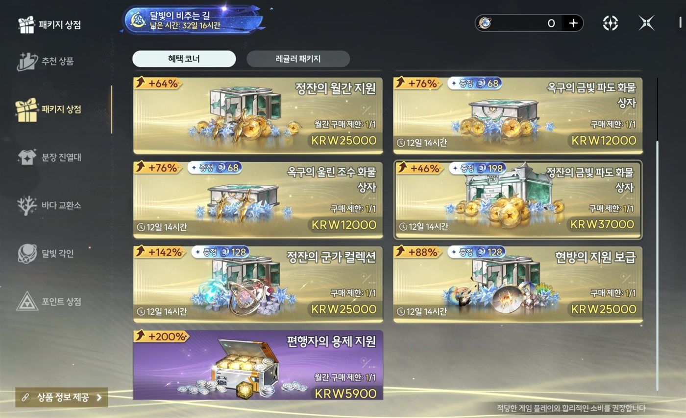

← 포트폴리오로 돌아가기
결론
명조 패키지 상점의 혜택 코너는 가격을 깎아 보이는 대신, 받는 양을 늘려 보이게 하는 방식으로 가격을 프레이밍한다. 가격 프레이밍의 8가지 기법 중 더 주기, 무료·보너스, 손실 프레임이 화면에서 확인되었고, 구매 제한 표시가 이를 보완한다.
정가에 취소선을 긋는 앵커 가격 방식은 쓰이지 않았다. 대신 상품마다 +% 배지를 붙여 기준점 역할을 대신하는 것으로 보인다. 기준이 무엇인지는 화면에 나오지 않는다.
1. 분석 대상
명조의 패키지 상점 중 혜택 코너 화면 한 장을 대상으로 했다. 상품 7종이 있고, 가격은 5,900원부터 37,000원까지다.

명조 패키지 상점 (혜택 코너)
분석 방법: 8가지 가격 프레이밍 기법 중 어떤 것이 쓰였는지를 화면에 보이는 요소만으로 찾고, 근거와 함께 표시했다.
2. 확인된 기법
| 기법 | 화면에서 확인된 것 | 해석 |
|---|
| 더 주기 | 카드마다 +64% ~ +200% 배지 | 가격을 낮추는 대신 받는 양이 늘어난다는 방식으로 표시한다. |
| 무료·보너스 | 증정 68 · 128 · 198 배지 (재화 아이콘 표시) | 기본 상품에 덤이 더해지는 것처럼 보이게 한다. |
| 손실 프레임 | 5개 카드의 "12일 14시간" 타이머, 상단 배너의 "남은 시간: 32일 16시간" | 기간이 끝나면 살 수 없다는 점을 계속 보이게 한다. |
| 구매 제한 (관련 요소) | "구매 제한: 1/1", "월간 구매 제한: 1/1" | 한 번만 살 수 있다는 표시가 지금 구매해야 한다는 인상을 더한다. 8가지 기법 목록에는 없는 관련 요소다. |
월간 상품 2종(25,000원, 5,900원)은 타이머 대신 월간 구매 제한이 표시된다.
3. 부분적으로만 보이거나 쓰이지 않은 것
부분적으로 보이는 것 (판단 유보)
- 앵커링: 가장 싼 5,900원 상품이 +200%로 가장 크게 표시되어 눈에 띈다. 다만 목록의 맨 위가 아니라 맨 아래에 있어 앵커링으로 단정하기 어렵다.
- % vs 금액: 가격이 3만 원대 이하의 저가라서 %를 쓰는 것이 일반적인 경험칙에 맞다. 다만 +%의 기준이 화면에 나오지 않는다.
- 끝자리 가격: 5,900원만 해당하고, 12,000원 · 25,000원 · 37,000원은 해당하지 않는다.
- 미끼 효과: 37,000원 상품은 증정이 198로 가장 많지만 +46%로 가장 낮다. 가격이 높을수록 +%가 커지는 구조는 아니다. 미끼 구조인지는 상품 내용을 더 확인해야 알 수 있다.
쓰이지 않은 것으로 보이는 것
- 앵커 가격 (취소선): 정가에 취소선을 긋고 할인가를 옆에 두는 표시가 없다.
- 쪼개기: "하루 ○○원" 같은 환산 표기가 없다.
- 심적 회계: 가격은 원화(KRW)로 직접 표시된다. 다만 증정 수량은 게임 재화 단위라, 재화가 현금처럼 느껴지지 않게 하는 효과는 보너스 쪽에 있다.
4. 윤리적 장치
가격 프레이밍은 사실을 보여주는 방식을 바꾸는 것이지 사실을 바꾸는 것이 아니다. 이 화면에서는 다음 요소가 확인되었다.
- 소비 권장 안내: 화면 하단에 "적당한 게임 플레이와 합리적인 소비를 권장합니다" 문구가 있다.
- 상품 정보 제공 버튼: 화면 왼쪽 아래에 상품 정보를 볼 수 있는 버튼이 있다.
- 가격과 구매 제한의 명시: 각 카드에 원화 가격과 구매 제한이 그대로 표시된다.
5. 분석의 한계
- 화면 한 장만 분석했기 때문에 다른 상점 화면(첫 충전, 월정액, 재화 충전 등)의 기법은 다루지 못했다.
- 기법과 화면 요소의 연결은 해석이며, 실제 설계 의도나 매출에 미친 효과는 확인하지 못했다.
- 타이머가 실제로 끝나는지, 끝난 뒤 같은 상품이 다시 나오는지는 한 장의 화면으로는 알 수 없다.
- +%의 계산 기준이 화면에 없어, 실제로 얼마나 더 받는 것인지는 확인하지 못했다.